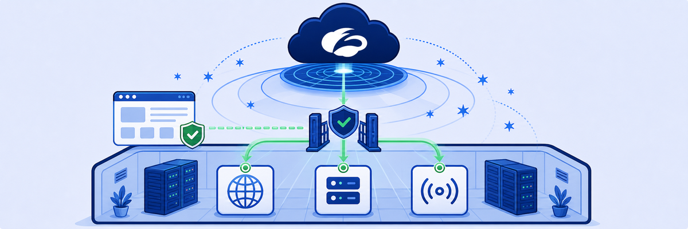

Lab 10: Add a Corporate Application
Scenario: Safemarch Corporation needs secure, scalable access to several internal applications that share a common domain pattern. To simplify access management and enforce reliable Zero Trust policies, you will configure a wildcard application segment for general access and a dedicated application segment for more granular user and application access. You will also enable ICMP access for troubleshooting.
Objectives: By the end of this lab, you will:
- Configure a wildcard application segment for internal applications (e.g.,
*.patraining.safemarch.com). - Configure user-specific access to defined internal applications.
- Enable ICMP access for troubleshooting in the ZPA Admin Portal.

In ZPA nothing is reachable until it's defined. An application segment says what (domains and ports), a server group says through which connectors, and an access policy says who.
- The Discovery segment covers
*.patraining.safemarch.comon almost every port. That's convenient. Why is it a starting point and not where a mature zero-trust deployment should stay? - The intranet host matches both the wildcard segment and the new Intranet segment. Which one does ZPA use, and why does that let you restrict the intranet to the Student user?
- Even after access works,
ping intranet…fails until you enable ICMP Access on the segment. Why is ICMP off by default for private apps?
In this task, you will configure a wildcard application segment that discovers internal applications matching a domain pattern and allows general access for all users.
1 Add a Wildcard Application Segment: Define Applications
- From the Experience Center, go to Policies > Access Control > Private Applications > Defined Application Segments.
- Click +Add Application Segment to create a new segment.
- At the Define Applications step of the wizard, under General Information:
- Name:
Discovery - Status: Enabled
- Source IP Anchor: Disabled
- Add a suitable description.
- Name:
- Applications: in the Enter a domain or IP address field, enter
*.patraining.safemarch.com - Client Connector Access: define the port ranges for TCP and UDP:
- TCP Port Ranges:
2-52and54-65535 - UDP Port Ranges:
1-52and54-65535 - TCP Keepalive: set to Disabled.
- TCP Port Ranges:
- Common Configuration: leave the defaults as they are.
2 Additional Configuration, Segment Group and Server Group
- At the Additional Configuration step, leave these options unchanged, then click Next:
- Double Encryption: Disabled
- Bypass: Use Client Forwarding Policy
- ICMP Access: Disabled
- At the Segment Group step:
- Click Add Segment Group.
- Name:
Discovered Apps - Status: Enabled
- Click Next.
- Add Server Group:
- Name:
CorpServers - Status: Enabled
- Set Dynamic Server Discovery: Enabled.
- App Connector Groups: OnPrem.
- Click Next.
- Name:
Note: The ICMP Access option is usually left disabled unless ICMP connectivity is needed for application troubleshooting or testing.
3 Review
- At the Review step, check the configuration and click Save.
4 Configure Access Policies
- Go to the Policies > Access Policy page in the ZPA Admin Portal.
- On the Access Policy page, click Add and configure the new rule:
- Name:
Discovered Apps - Rule Action: Allow Access
- Leave App Connector Selection Method at All App Connector Groups for the Application.
- Click Add Criteria, select Applications, and choose the Discovered Apps Segment Group.
- Don't add any other criteria.
- Click Save.
- Name:

5 Test the Access Policy
- On the Corp Client PC, open a web browser in a window.
- Open the Zscaler Client Connector and place its window next to the browser.
- Load
http://intranet.patraining.safemarch.com(a bookmark is provided). - Confirm that the Intranet page loads correctly.
- Refresh the page and check that the Total Bytes Sent / Received counters in Zscaler Client Connector go up.
In this task, you will create a dedicated application segment for more granular access control that limits intranet access to the "Student" user.
1 Review recently accessed private applications
- From the Experience Center, go to the search bar and type
applicationsto navigate to Analytics > Private Applications. - Scroll to the Applications Discovered in the past 14 days section to identify recently accessed applications.
2 Configure the Intranet Application Segment
- Click Add Application Segment, select the application
intranet.patraining.safemarch.com, and click Define Selected Applications.- Alternatively, go to Policies > App Segment.
- At the Define Applications step:
- Name:
Intranet - Status: Enabled
- Source IP Anchor: Disabled
- Add a suitable description.
- Leave the other settings at their defaults.
- Click Next.
- Name:
- Add a Segment Group as follows:
- Name:
CorpApps - Status: Enabled
- Click Next.
- Name:
- Add the Server Group as follows:
- Name: CorpServers (select the one you created for the wildcard application segment)
- Click Next.
- Click Save.
Note: After you save the Application Segment, you are redirected to the Edit Policy page, where you can add a policy for the App Segment. Alternatively, go directly to the Policies > Access Policy page from the left-hand menu.
3 Add an Access Policy
- Go to Policies > Access Policy. Click Add to configure a new policy with these settings:
- Rule Name:
Allow Intranet - Rule Action: Allow Access
- Keep the App Connector Selection Method: All App Connector Groups.
- Rule Name:
- Define the criteria:
- Click Add Criteria.
- Select Applications, and choose the Intranet Application Segment you just created.
- Add another criterion for User and Session Attributes: click the + icon to add User Attributes, then select loginname and choose the user
student@<Student FQDN>. - Click Save.
4 Test the policy
- On the Corp Client PC, open a web browser and Zscaler Client Connector side by side so you can watch the traffic counters as pages load.
- Go to
http://intranet.patraining.safemarch.comusing the provided bookmark. - Make sure the intranet page loads successfully for the Student user.
- Refresh the page and confirm that the Total Bytes Sent/Received counters in Zscaler Client Connector go up.
In this task, you will enable ICMP access on an application segment so you can use ping to troubleshoot reachability to an internal application.
1 Verify ICMP accessibility
- On the Corp Client PC, open Command Prompt and enter:
ping intranet.patraining.safemarch.com
Note: If ICMP Access is disabled in the Application Segment, the internal application won't respond to ping requests or be reachable through ICMP.
2 Enable ICMP Access in the ZPA Admin Portal
- Go to Policies > Access Control > Private Applications > Defined Application Segments.
- Find the Application Segment named Intranet and click Edit.
- In the Edit Application Segment window, click Next to reach the ICMP Access field.
- Set ICMP Access to Enabled.
- Click Save to apply the change.
3 Test ICMP connectivity
- Return to the Corp Client PC.
- Reopen Command Prompt and enter
ping intranet.patraining.safemarch.com
Expected Result: The internal application should now respond to ping requests, which confirms that ICMP traffic is allowed.
Note: Only enable the ICMP Access option if ICMP connectivity is needed for troubleshooting. Avoid using it for general application testing.
Discovery (*.patraining.safemarch.com) + Discovered Apps rule = broad access and app discovery. Specific Intranet segment + Allow Intranet (loginname = Student) = least privilege, because the most specific segment wins. ICMP Access is off by default, so enable it per segment only when ping is needed.